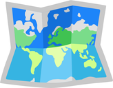
: Crowdsourcing Multiple Actions per State for Real-World Robot Imitation LearningConference on Robot Learning (CoRL) 2026
Real-world robot imitation learning is often limited by the cost of collecting physical demonstrations, which typically yield only one action label per visited state. We present CrowdMAPS, a web-based crowdsourcing paradigm for augmenting real-robot datasets with Multiple Actions per State (MAPS). After or during standard robot data collection, CrowdMAPS distributes visited robot states to remote annotators through a web-based 3D interface, where they specify alternative valid actions without requiring access to physical robot hardware. This expands robot datasets along a complementary “width” dimension—by increasing the number of actions per visited state—rather than only by collecting more trajectories. We evaluate CrowdMAPS using keyframe-centric goal-pose annotations supplied by non-expert annotators and train imitation policies on the resulting MAPS data. Across five real-world manipulation tasks, increasing MAPS width from one to ten actions per state improves sample efficiency and increases average success rates by 35.6 percentage points for keypose policies and 33.0 percentage points for trajectory policies. These results show that software-mediated human annotations can augment physical robot data to afford denser supervision, establishing CrowdMAPS as a scalable digital layer for real-robot data collection.
A single visited robot state often admits several valid next actions: a grasp can be approached from slightly different poses, and a multi-step task can be completed in different orders. Standard imitation learning datasets record only the one action that happened to be executed. CrowdMAPS decouples hardware-bound state acquisition from software-scalable action annotation: real robots provide physically grounded states, and remote annotators add alternative valid actions for those states from a web browser, without access to robot hardware.
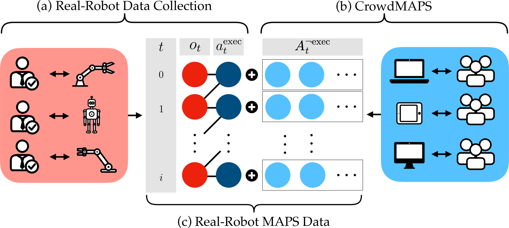
A standard trajectory pairs each visited observation ot with one executed action at. A MAPS dataset keeps exactly the same visited observations but pairs each of them with a set of valid actions At: the executed action plus valid, unexecuted alternatives At¬exec. The number of actions per state, K, is the dataset’s “width.” Under independent sampling, MAPS data scales the action-dependent variance of the imitation-learning gradient estimator by 1/K, without introducing bias.
In our implementation, every action is a goal pose (end-effector position, orientation, and a gripper open/close command) that a motion planner executes. Annotation is keyframe-centric: keyframes, which occur at the start of a trajectory and whenever a goal is reached, store the executed goal pose plus crowdsourced alternatives, while intermediate frames are paired with the goal currently being pursued.
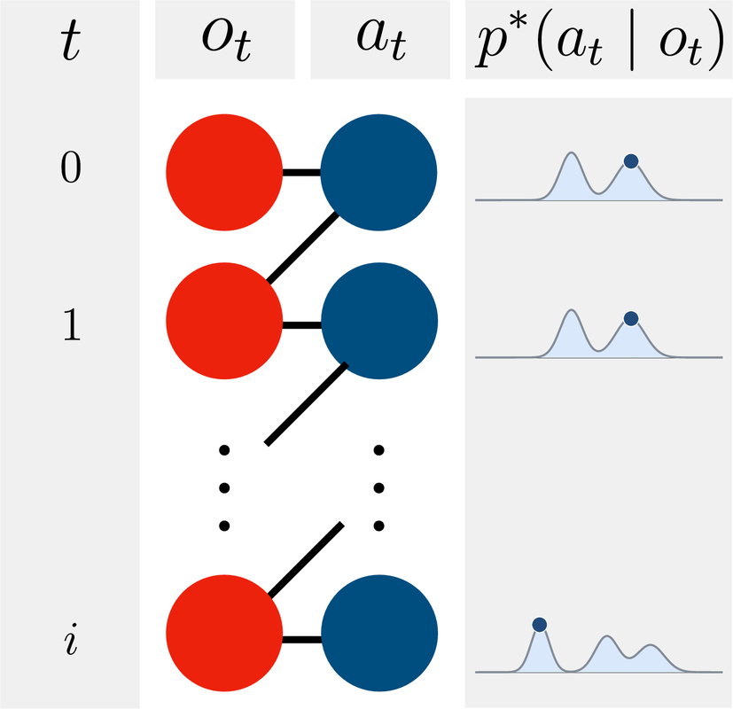
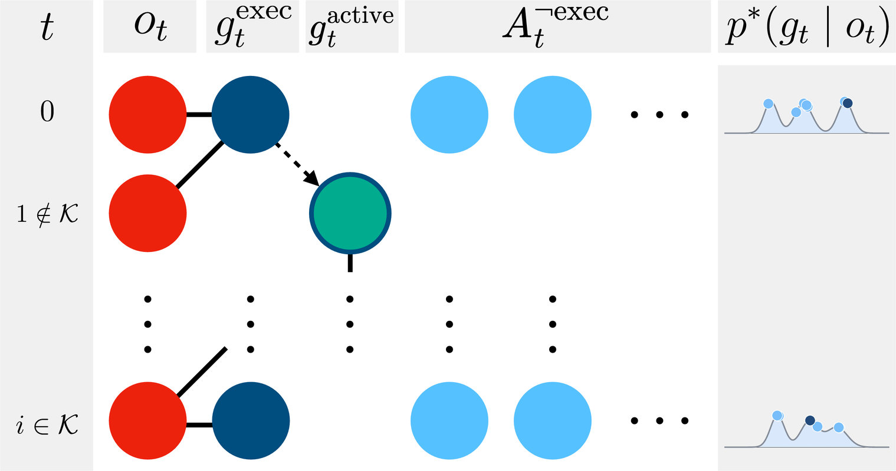
Standard trajectory data vs. keyframe-centric MAPS data. CrowdMAPS preserves the executed trajectory but augments selected keyframes with additional valid, unexecuted goal-pose labels. This increases the density of action labels per visited state without creating additional real-world transition branches.
CrowdMAPS collects alternative goal poses in two stages:
A researcher validates each submission for consistency with the manipulation strategy used during physical data collection, semantic alignment with the keyframe instruction, and physical coherence. Because annotation needs no robot, many people can contribute at the same time, avoiding the one-user-one-robot bottleneck of synchronous web teleoperation.
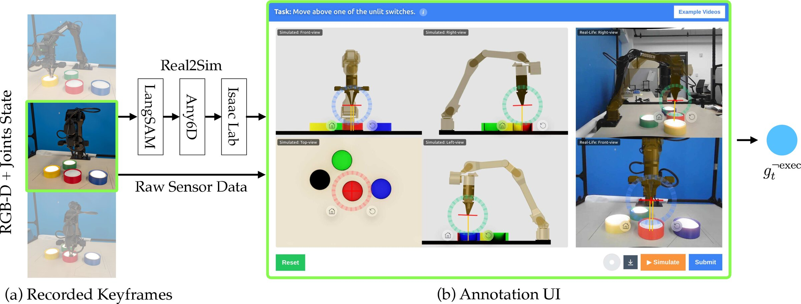
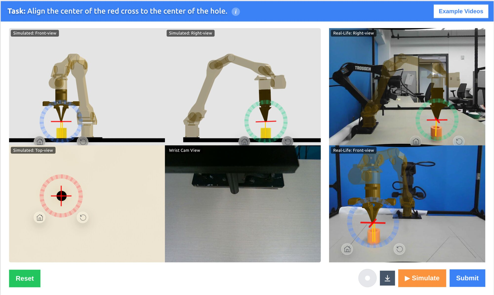
Because alternative actions are never executed, the states they would lead to are absent from the data. We call this MAPS shift and mitigate it in two ways: validation keeps crowdsourced actions within the chosen manipulation strategy, and the loss weights executed actions above unexecuted alternatives, which in turn are weighted above intermediate-frame goals.
We recruited 47 participants through university mailing lists and social media; most had little to no experience with robotics. Across the four tasks with timing logs, the median submission took 7 to 12 seconds, so annotators can contribute in short sessions rather than through sustained teleoperation. Submission acceptance rates were 51% for Drawer, 98% for Insertion, 66% for Pouring, 83% for Sorting, and 94% for Switches, and annotators generally became faster and more accurate with practice.
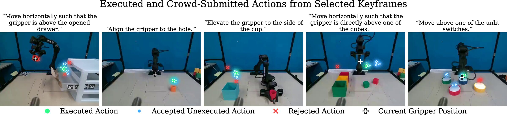
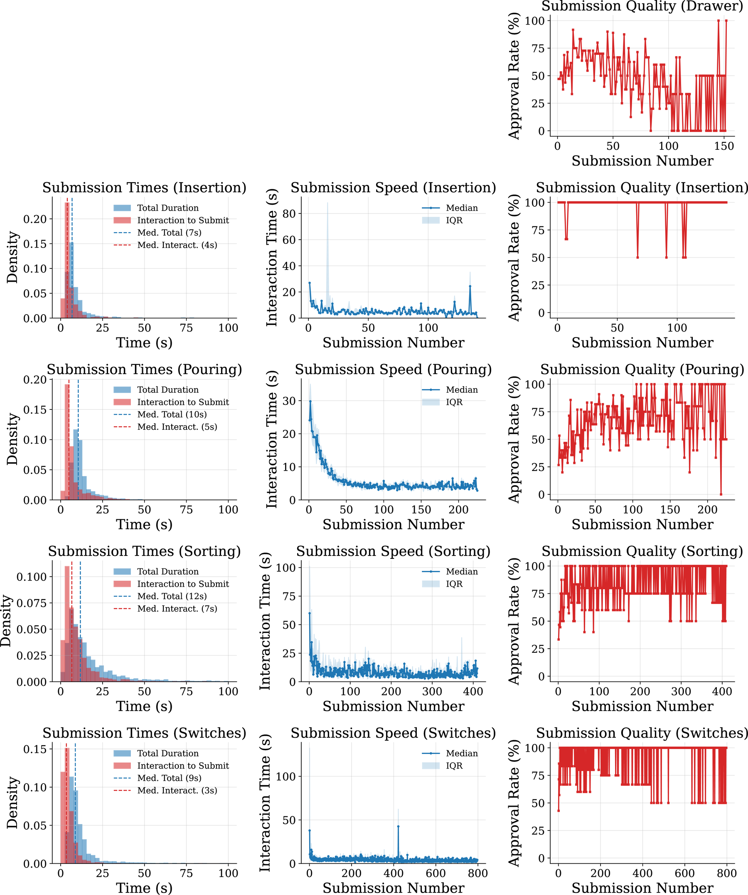
We evaluate on five real-world manipulation tasks that vary in horizon, precision, and multimodality. Each image below shows the keyframes of one demonstration. Every trained policy is evaluated with 25 real-world rollouts under randomized initializations.
Hardware: Trossen WidowX AI arm, with an Intel RealSense D455 front camera and a D405 wrist camera. Expert teleoperation uses a second WidowX AI arm as the leader.
Task: Open the middle drawer, pick up a red cube, place it inside, and push the drawer closed. This combines articulated-object manipulation with pick-and-place.
Success: The middle drawer is closed with the red cube inside.
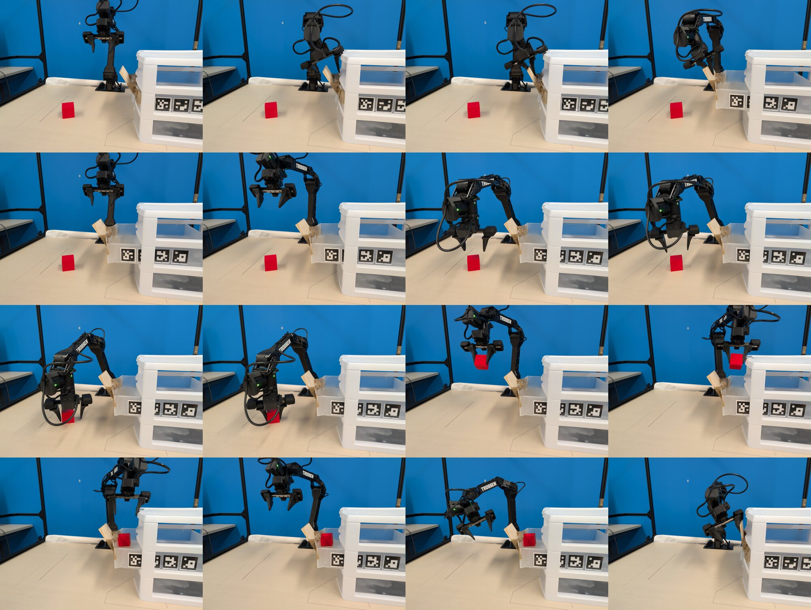
Task: Insert a 1 cm pole end-effector into a hollow cylinder with a 3 cm opening, placed anywhere in a 30 cm × 70 cm region. This requires precise alignment.
Success: The end-effector enters the hole without touching the top surface.
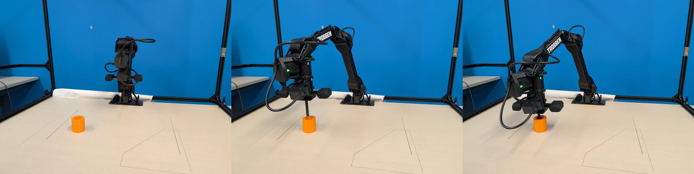
Task: Grasp a cup holding two dozen nails, carry it to a container, and pour. This requires a specialized transport-and-pour motion.
Success: All but at most three nails end up in the container.
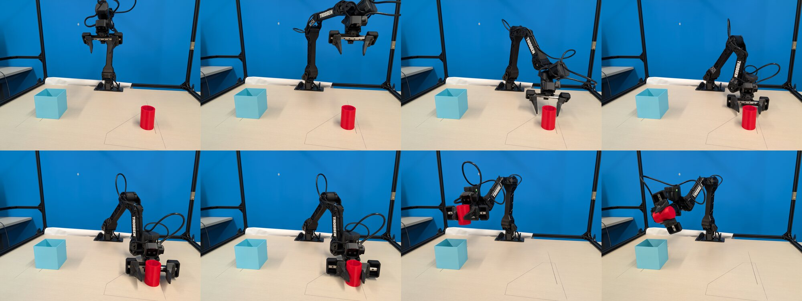
Task: Place two cubes into the containers of matching color. The task is multimodal because the cubes can be picked in either order.
Success: Every cube is inside the container of its color.
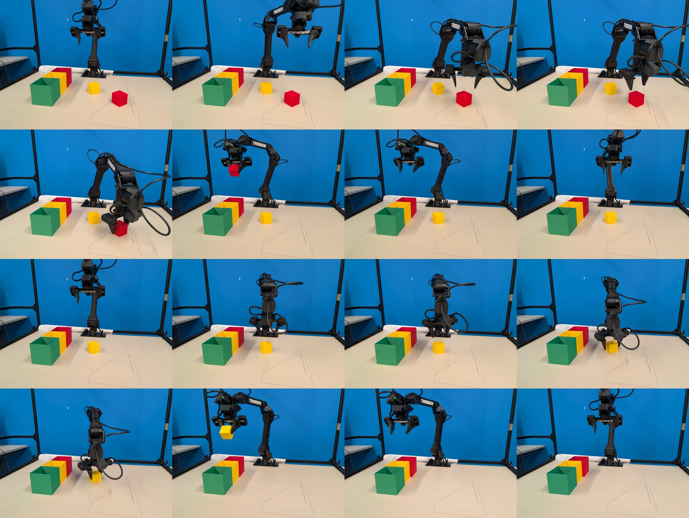
Task: Press four puck lights to turn them all on. The task is multimodal because the lights can be pressed in any order. We use two variants: in Switches+ all four lights must be activated, and in Switches− three lights are already on and the policy presses the remaining one.
Success: All four lights are on. For Switches+ we report the number of activated lights across 25 rollouts, out of 100.
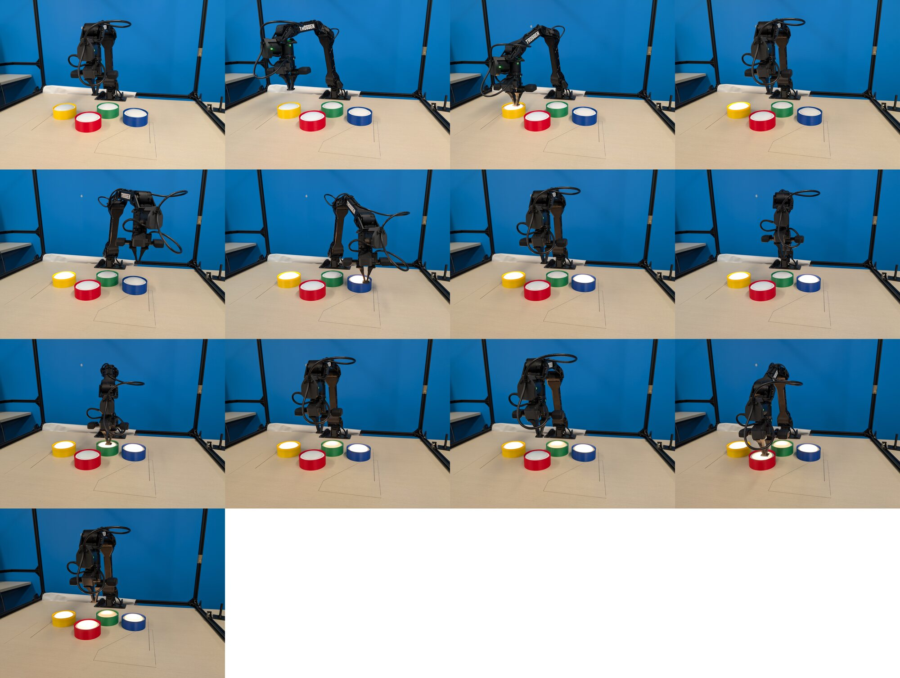
Averaged across all task and dataset-size settings, increasing width from K = 1 to K = 10 raises success from 38.7% to 74.2%, a gain of 35.6 percentage points. The effect is strongest on longer-horizon and multimodal tasks: on Sorting and Switches−, it averages 42.5 points, and K = 10 is the only width that exceeds 85% success.
| K | Drawer | Insertion | Pouring | Sorting | Switches− | |||||||||||||
|---|---|---|---|---|---|---|---|---|---|---|---|---|---|---|---|---|---|---|
| 5 | 20 | 30 | 40 | 50 | 60 | 15 | 20 | 30 | 45 | 20 | 30 | 40 | 50 | 50 | 60 | 70 | 80 | |
| 1 | 12 | 8 | 36 | 68 | 72 | 76 | 28 | 32 | 56 | 92 | 8 | 20 | 28 | 36 | 24 | 24 | 36 | 40 |
| 2 | 52 | 16 | 64 | 76 | 88 | 92 | 32 | 40 | 72 | 96 | 4 | 8 | 48 | 52 | 28 | 44 | 52 | 60 |
| 5 | 76 | 8 | 64 | 76 | 88 | 92 | 32 | 40 | 80 | 96 | 20 | 28 | 64 | 72 | 36 | 40 | 60 | 80 |
| 10 | 76 | 12 | 72 | 92 | 96 | 96 | 56 | 84 | 96 | 100 | 28 | 40 | 88 | 92 | 56 | 80 | 84 | 88 |
| 10 (noise) | 4 | 12 | 68 | 88 | 68 | 52 | 32 | 16 | 52 | 80 | 0 | 8 | 60 | 24 | 40 | 56 | 52 | 68 |
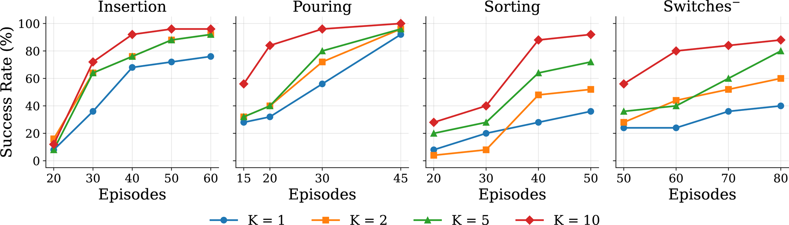
The K = 10 (noise) row replaces every crowdsourced alternative with a Gaussian perturbation of the executed action, with covariance estimated from the crowd annotations themselves. Despite matching the action density of K = 10, it reaches only 43.3% average success, compared with 74.2% for crowdsourced labels. It also gets worse with more data in several settings: from 88% to 52% on Insertion and from 60% to 24% on Sorting.
We sample 100 goal-pose predictions from keypose policies trained with K = 1, 2, 5, 10 at the same held-out keyframe. On the unimodal Insertion task, wider MAPS data shrinks both the offset and the spread of the predictions. On the multimodal Sorting task, low-width policies smear predictions between the two cubes, whereas at K = 10 the policy represents both valid choices as distinct, sharp modes.
Policy predictions at held-out keyframes. Purple markers denote predictions; the white cross denotes the current gripper position. (a) Insertion: increasing K reduces both the offset and the dispersion of the predictions. (b) Sorting: increasing K results in sharper, more clearly separated valid action modes.
MAPS adds action labels only at states the robot already visited, so the gains cannot come from broader state coverage. We attribute them to two compounding effects: within-mode densification (denser sampling of valid actions around one solution) and multimodal coverage (distinct valid solutions represented at the same state). Crowd labels show both: the median within-mode spread ranges from 2.8 mm (Insertion) to 17.0 mm (Drawer), while distinct modes on Sorting and Switches are separated by a median of 122.8 mm and 201.5 mm. Consistently, the improvement from K = 1 to K = 10 grows with multimodality: +22, +32, +39, and +46 percentage points on Insertion, Pouring, Sorting, and Switches−.
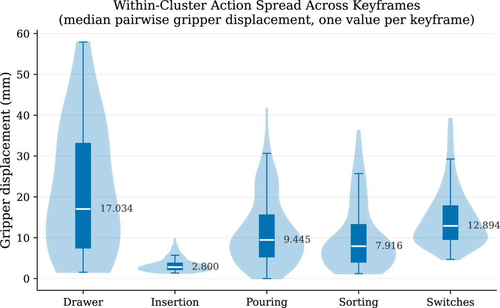
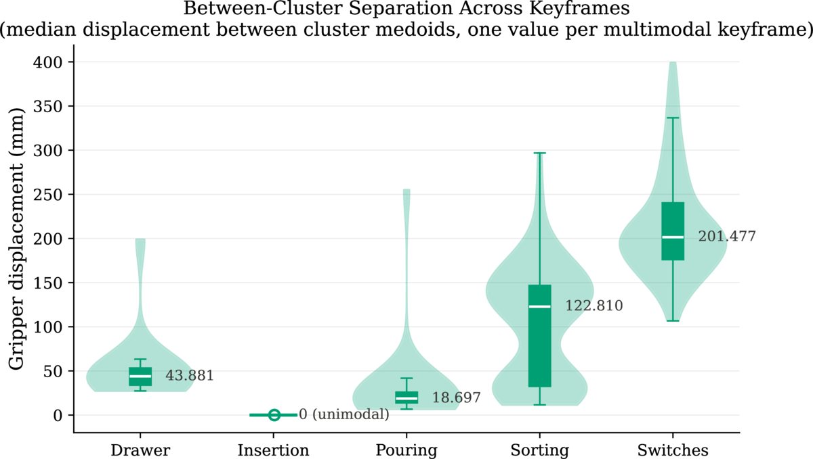
Geometric structure of crowdsourced actions. Distances measure the maximum displacement of fixed reference points on the gripper body between two goal poses, so both translation and orientation differences contribute, in millimetres.
Starting from a base set of expert demonstrations, we compare adding more expert teleoperated trajectories with adding CrowdMAPS data. At K = 1, MAPS data often underperforms extra teleoperation, since single keyframe labels carry less temporal detail. As K grows, denser supervision makes up for this: increasing width from 1 to 10 improves average success by 33.0 percentage points, and at K = 10 MAPS data gives the best result on every task.
The comparison approximately matches robot time (2.2 hours for MAPS data vs. 2.3 hours for the added expert trajectories) but not total human effort: at matched performance, MAPS data required about 1.5× more human time.
| Training data | Drawer | Insertion | Pouring | Sorting | Switches+ |
|---|---|---|---|---|---|
| Data sizes: Ebase / Eadded / DMAPS | 10 / 5 / 5 | 200 / 100 / 60 | 50 / 50 / 45 | 50 / 50 / 50 | 80 / 80 / 80 |
| Ebase | 36 | 0 | 48 | 16 | 29 |
| Ebase + Eadded | 56 | 24 | 80 | 52 | 54 |
| Ebase + DMAPS (K = 1) | 36 | 16 | 76 | 32 | 41 |
| Ebase + DMAPS (K = 2) | 48 | 28 | 84 | 60 | 53 |
| Ebase + DMAPS (K = 5) | 52 | 24 | 92 | 80 | 60 |
| Ebase + DMAPS (K = 10) | 76 | 40 | 92 | 88 | 70 |
Trajectory policy performance under different data augmentation strategies. All methods start from the base expert demonstrations Ebase. We compare adding expert trajectories Eadded with adding MAPS data DMAPS at different widths K. Results are success rates over 25 rollouts, except Switches+, which is reported as activated lights out of 100. Best results are in bold.
@inproceedings{song2026crowdmaps,
title={CrowdMAPS: Crowdsourcing Multiple Actions per State for Real-World Robot Imitation Learning},
author={Song, Yilong and Chandirasekar, Harshvardhan and Desingh, Karthik and Zhu-Tian, Chen},
booktitle={Conference on Robot Learning},
year={2026}
}